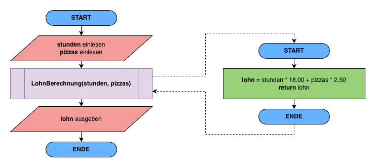

Funktionen (return)
Lernziel
Am Ende dieser Lektion schreibst du Funktionen mit Rückgabewert, verwendest das Ergebnis weiter, prüfst mit bool-Funktionen und lagerst Code durch Refactoring in Funktionen aus.
1. Einstieg
- Bisher haben deine Funktionen etwas ausgegeben. Oft brauchst du aber das Ergebnis weiter: für eine Berechnung, eine Bedingung oder eine Anzeige an anderer Stelle. Dafür gibt eine Funktion einen Wert zurück.
- Funktionen mit Rückgabewert sind die Bausteine für Berechnungen, Prüfungen und Umrechnungen. Du kennst sie bereits von Hilfsfunktionen wie
Math.Max(a, b). - Refactoring heisst: Code umbauen, ohne dass sich das Verhalten ändert. Das Ziel ist ein Programm, das du auch in drei Monaten noch verstehst.
2. Grundlagen
A - Rückgabewert und return
int ergebnis = Quadrat(5);
Console.WriteLine(ergebnis); // 25
int Quadrat(int zahl)
{
return zahl * zahl;
}
- Statt
voidsteht der Datentyp des Ergebnisses vor dem Funktionennamen. returnliefert den Wert zurück und beendet die Funktion sofort.- Der Datentyp des Werts bei
returnmuss zum Datentyp der Funktion passen.
B - Den Rückgabewert weiterverwenden
Ein Funktionenaufruf mit Rückgabewert ist ein Wert. Du kannst ihn überall einsetzen, wo auch eine Zahl oder Variable stehen darf:
int a = Addiere(2, 3);
Console.WriteLine(Addiere(a, 1) * 2);
if (Addiere(a, 1) > 5)
{
Console.WriteLine("gross");
}
Ein Aufruf wie Quadrat(5); ohne Variable kompiliert zwar, das Ergebnis geht aber verloren.
C - bool-Funktionen
bool IstGerade(int zahl)
{
return zahl % 2 == 0;
}
if (IstGerade(4))
{
Console.WriteLine("gerade");
}
Namen wie IstGerade, IstPrimzahl oder HatGenug lesen sich in der if-Bedingung wie ein Satz.
D - Jeder Weg braucht ein return
int Groesste(int a, int b)
{
if (a > b)
return a;
else if (b > a)
return b;
}
Das ergibt den Fehler CS0161 ("not all code paths return a value"). Für a == b gibt es keinen return. Der Compiler prüft alle möglichen Wege durch die Funktion.
E - PAP einer Funktion mit Rückgabe
Der PAP der Funktion beginnt bei ihrem Namen. Jeder Weg endet in einem Ergebnis ("gib zurück"). Eine Funktion kann mehrere Enden haben, solange jeder Weg eines hat.

F - Refactoring
Wenn ein Programm lang wird, lagerst du zusammengehörende Blöcke in Funktionen aus:
- Block markieren, der eine Sache macht.
- Passenden Namen wählen.
- Was geht hinein? Das werden die Parameter.
- Was kommt heraus? Das wird der Rückgabewert.
- Block verschieben, Aufruf einsetzen und testen. Das Programm muss sich danach gleich verhalten.
G - Eingabe als Funktion
int alter = LeseZahl("Alter", 0, 120);
int LeseZahl(string frage, int min, int max)
{
int zahl;
do
{
Console.Write(frage + " [" + min + "-" + max + "]: ");
zahl = Convert.ToInt32(Console.ReadLine());
}
while (zahl < min || zahl > max);
return zahl;
}
3. Übungen
Regeln: Die offizielle C#-Dokumentation und Ressourcen im Netz darfst du verwenden. KI-Tools bleiben weg, damit der Lerneffekt möglichst gross ist.
1. Code lesen I
Was gibt das Programm aus?
int a = Addiere(2, 3);
int b = Addiere(a, a);
Console.WriteLine(b);
Console.WriteLine(Addiere(b, 1) * 2);
Addiere(100, 200);
Console.WriteLine(IstGerade(b));
int Addiere(int x, int y)
{
return x + y;
}
bool IstGerade(int zahl)
{
return zahl % 2 == 0;
}
2. Fehler finden I
Das Programm soll das Quadrat von 5 und die grössere von zwei Zahlen ausgeben. Es enthält einen Kompilierfehler und einen Denkfehler im Hauptprogramm (der Code läuft, tut aber nicht, was er soll). Finde beide, erkläre sie und korrigiere sie.
01 Quadrat(5);
02 Console.WriteLine(Groesste(4, 7));
03
04 int Quadrat(int zahl)
05 {
06 return zahl * zahl;
07 }
08
09 int Groesste(int a, int b)
10 {
11 if (a > b)
12 return a;
13 else if (b > a)
14 return b;
15 }
3. Funktionen schreiben
Schreibe folgende Funktionen und rufe jede im Hauptprogramm mit mindestens zwei Testwerten auf:
- a)
int Maximum(int a, int b)gibt die grössere der beiden Zahlen zurück. - b)
bool IstGerade(int zahl)gibttruezurück, wenn die Zahl gerade ist. - c)
long Fakultaet(int n)berechnet n! (Beispiel:Fakultaet(5)ist 120). Verwende den Datentyplong. - d)
long Potenz(int basis, int exponent)berechnet die Potenz mit einer Schleife (Beispiel:Potenz(2, 10)ist 1024). Die FunktionMath.Powist hier nicht erlaubt.
4. Preisrechner 🇨🇭
Schreibe ein Programm, das einen Nettopreis einliest und den Endpreis ausgibt. Verwende drei Funktionen:
double MitMwst(double netto)addiert 8.1 % Mehrwertsteuer (netto * 1.081).double RundeAuf5Rappen(double betrag)rundet auf 5 Rappen (Math.Round(betrag * 20) / 20).double Endpreis(double netto)ruft die beiden anderen Methoden auf und gibt das Ergebnis zurück.
Gib den Endpreis mit zwei Nachkommastellen aus (.ToString("F2")). Testwerte: 19.95 ergibt 21.55 CHF, 100 ergibt 108.10 CHF.
5. Taschenrechner mit Menü 🧮
Schreibe einen Taschenrechner mit Menü:
- Das Menü zeigt
1) Addieren,2) Subtrahieren,3) Multiplizieren,4) Dividieren,0) Beenden(MethodeZeigeMenue). - Die Auswahl und die beiden Zahlen (von -1000 bis 1000) liest du mit
LeseZahlein. - Jede Rechenart ist eine eigene Methode:
Addiere,Subtrahiere,MultipliziereundDividiere(Rückgabetypdouble, damit7 / 2den Wert3.5ergibt). - Bei einer Division durch 0 erscheint eine Meldung statt eines Ergebnisses.
- Das Programm läuft, bis der Benutzer 0 wählt, und verabschiedet sich dann.
Tipp: Der Hauptteil besteht aus einer do-while-Schleife mit einem switch. Für das Ergebnis der Division brauchst du (double)a / b.
4. Weiterführende Beispiele und Gedanken
- Typische Stolperfalle: Der Rückgabewert wird nicht aufgefangen (
Quadrat(5);). Es passiert nichts Sichtbares. - Typische Stolperfalle: Ein Weg ohne
return(Fehler CS0161). Zeichne den PAP, dann siehst du den fehlenden Weg. - Faustregel: Eine Funktion macht eine Sache. Wenn dein Funktionenname ein "und" enthält, sind es meist zwei Funktionen.
- Überlege: Welche Funktionen aus der Standardbibliothek kennst du bereits, die einen Wert zurückgeben? (
Math.Max,Convert.ToInt32,Console.ReadLine) - Weiterführend: Offizielle Dokumentation zur
return-Anweisung: https://learn.microsoft.com/de-de/dotnet/csharp/language-reference/statements/jump-statements